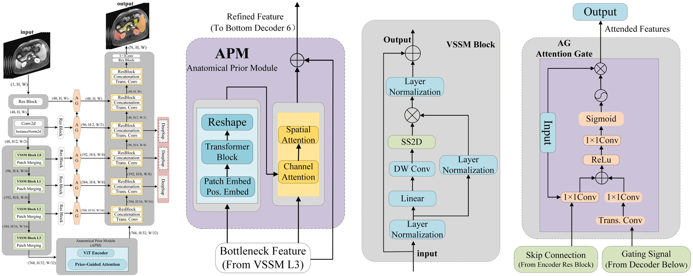
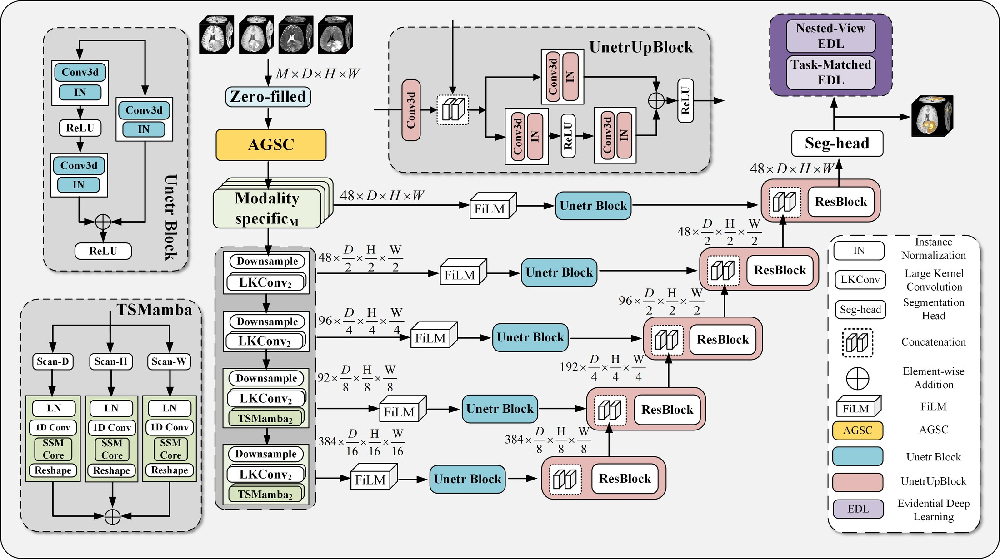
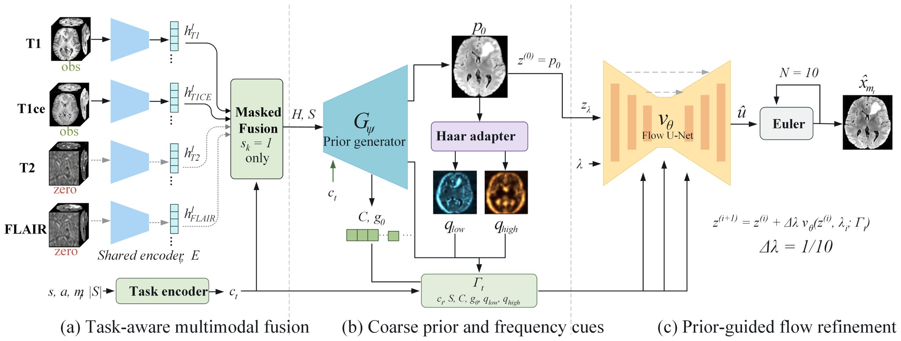
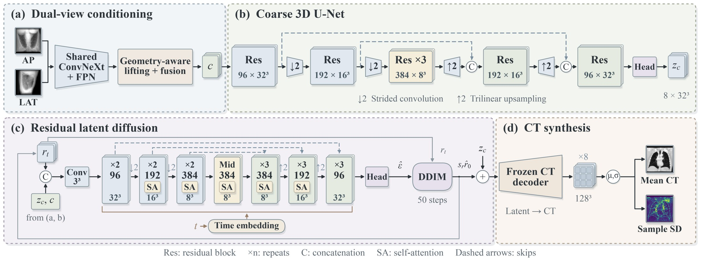
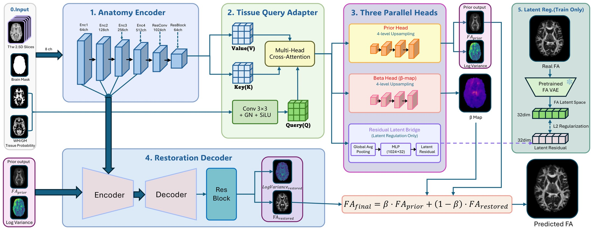
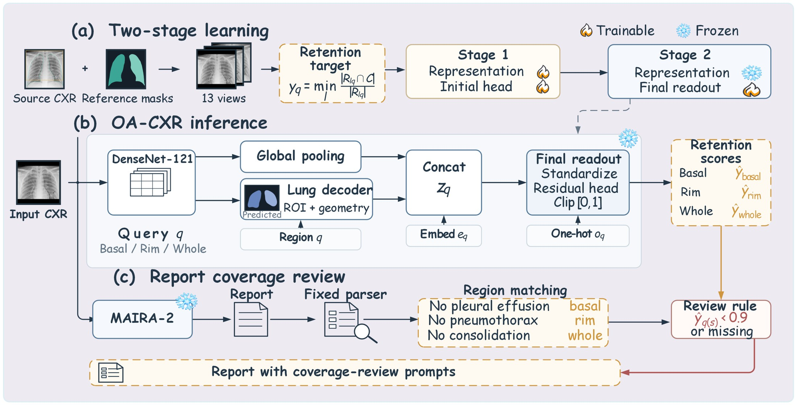

01UnderstandFirst authorEMBC 2026 Oral
AP-Mamba
Anatomy-Aware State Space Models for Multi-organ Abdominal MRI Segmentation

A visual state-space network with an Anatomical Prior Module for global organ layout and co-occurrence; attention gates refine boundaries.
Consistent Dice and NSD gains over CNN, Transformer and recent Mamba baselines.
CHAOS-MRI (5-fold CV) · AMOS-MRIPaperCode
01UnderstandFirst authorIEEE TMI Under review
ReLiSS
Modality-Adaptive Representation Conditioning for Multimodal MRI Segmentation under Arbitrary Modality Availability

Availability-gated spatial–spectral conditioning adapts one CNN–Mamba segmenter to any subset of MRI sequences, with evidential uncertainty.
Highest mean Dice under incomplete inputs: 80.82% BraTS2021, 65.08% ISLES2022, 70.68% WMH2017, 64.20% TSC.
28 incomplete-modality settingsPaperCode
02RecoverFirst authorBIBM 2026 Oral
PriorFM
Prior-Guided Flow Matching for Missing Modality MRI Synthesis

Fuses any subset of observed sequences into a coarse anatomical prior, then refines it by conditional flow matching in a few Euler steps.
Best average synthesis over 32 source-to-target tasks; synthesized scans give segmentation Dice close to real scans.
BraTS2021 · CHAOS · Diff5TPaperCode
02RecoverFirst authorISBI 2027 Under review
UPath-X2CT
Geometry-Aware Biplanar Chest CT Reconstruction with Residual Latent Diffusion

Calibrated projections lift biplanar X-ray features onto a shared 3D grid; conditional diffusion refines the residual of a coarse latent CT.
Outperforms five baselines in PSNR, SSIM and MAE, with +1.23 to 1.80 dB PSNR over DVG-Diffusion.
LIDC-IDRI · MSD Lung · CT-RATEPaperCode
02RecoverThird authorBHI 2026 Oral
ATLANTIS
An Anatomy-guided Tissue-Latent Atlas Network for DWI-derived White-Matter Anisotropy Synthesis from T1w MRI

Synthesizes fractional anisotropy maps from routine T1w MRI using tissue-aware modulation, prior-restoration decoding and adaptive fusion.
Image-level MAE 5.0% below ResViT; tract-level MAE and bias reduced by 20.2% and 83.3% across eight JHU tracts.
HCP Young Adult · 97 test subjectsPaper
03ReviewFirst authorJournal Under review
OA-CXR
An Anatomical-Retention-Guided System for Selective Chest Radiograph Report Review

Estimates how much of each region a radiograph retains, then maps report statements to regional queries to flag those needing review.
Lowest error among nine retention regressors (macro MAE 0.0296); reviewing 50% of reports captures 91.7% of those with low-retention statements.
343,395 queries · 8,805 images · 4 datasetsPaperCode